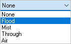

Material
This sets the material definition for the active tool. This material is also used in the Load from File option, also referred to as the Feeds & Speeds Calculator.
Cut Material Color
You can set the cut material simulation color for this tool. To view this color during simulations, set the Simulation Display State to Tool. This control is located to the right of the toolbar at the bottom of the Simulate tab.

Number of Flutes
This defines the total number of flutes for the active tool.
Adjust Register
This is used to set the Tool Length Offset (an integer). Generally this is set the same as Tool Number. See Adjust Register for more information.
Cutcom Register
This is used to set the Tool Diameter Offset (an integer) for cutter compensation / tool wear compensation at the controller. Generally this is set the same as Tool Number. See Cutcom Register for more information.
Axial Offset
This parameter offsets the Z value in the posted g-code by the specified value. This can be set to a positive or negative value and can be an integer or decimal. See Axial Offset for more information.
Coolant
Here you can override the Coolant that is specified by the Tool. Coolant can be set to Flood, Mist, Through or Air. Coolant codes are defined in the post processor generator under Misc tab. Coolant Off is also supported as a variable that can be added where needed using the post-processor generator.
 Coolant selections available |
Comments
Outputs specified comments in the posted g-code before a tool change. See Comments for more information.
|